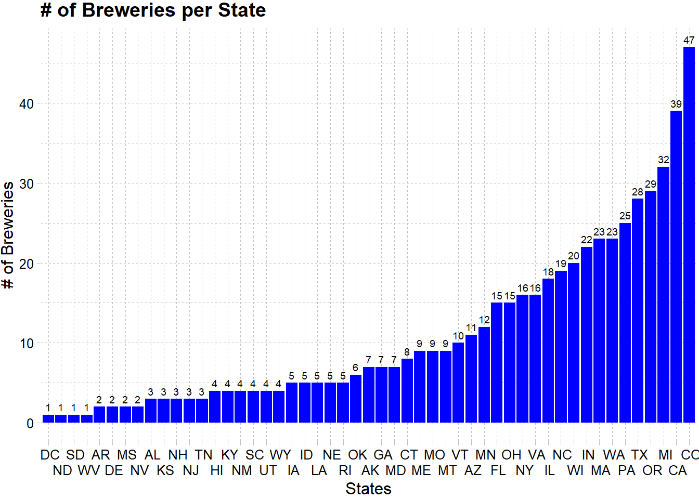
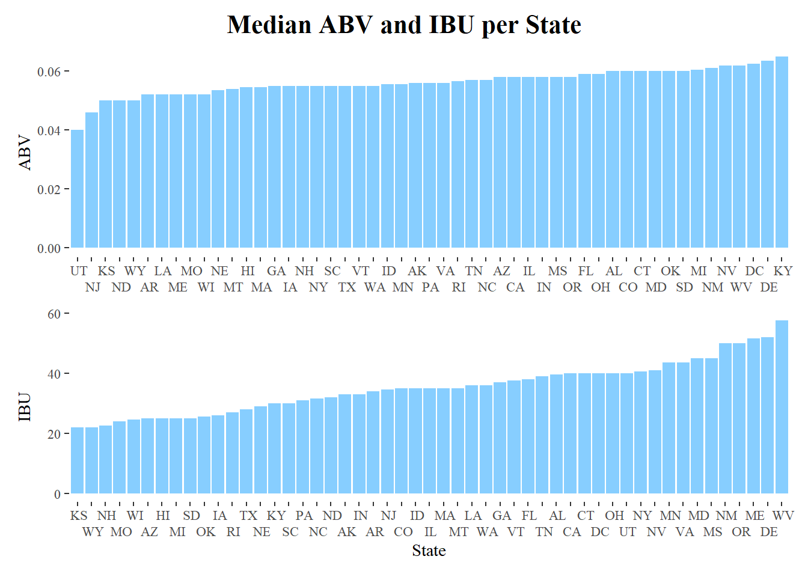
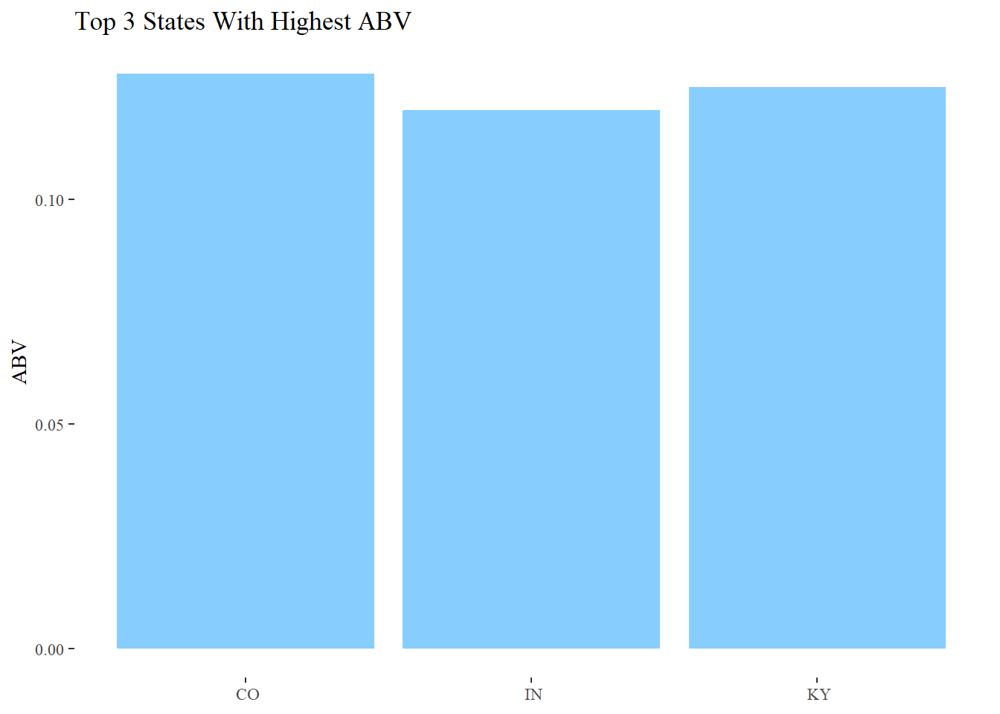
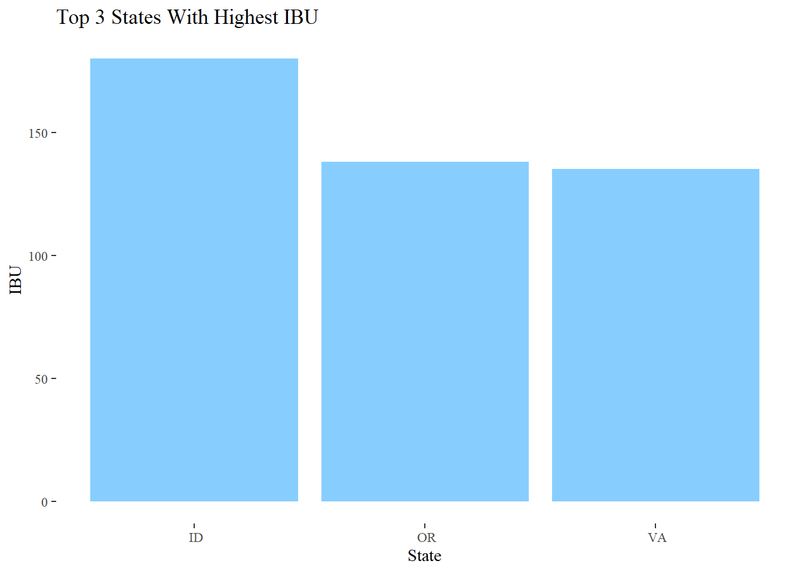
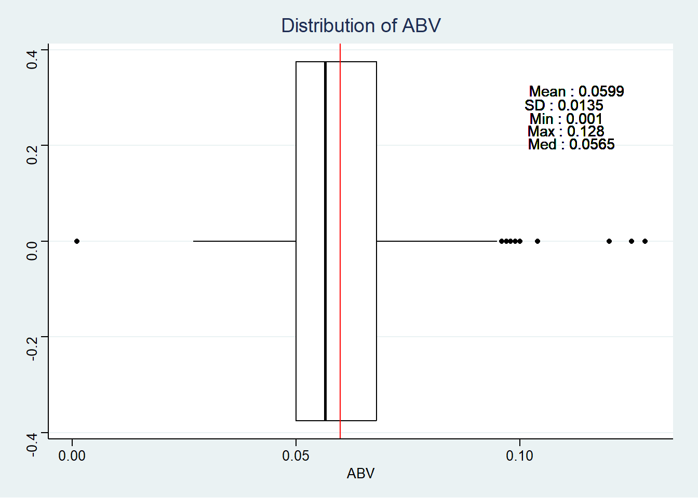
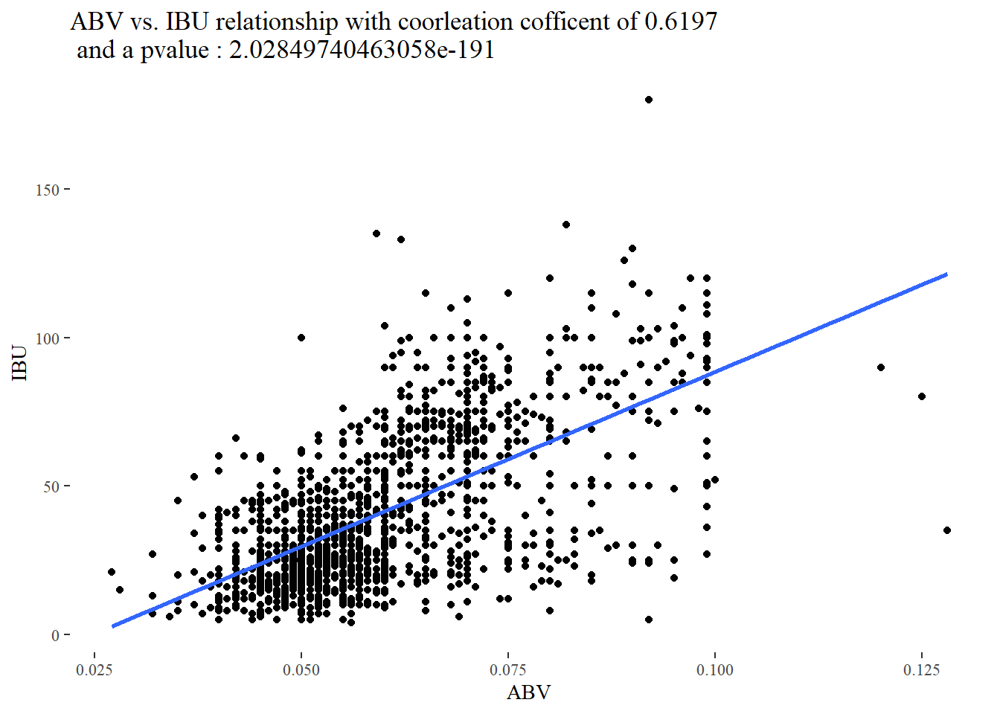
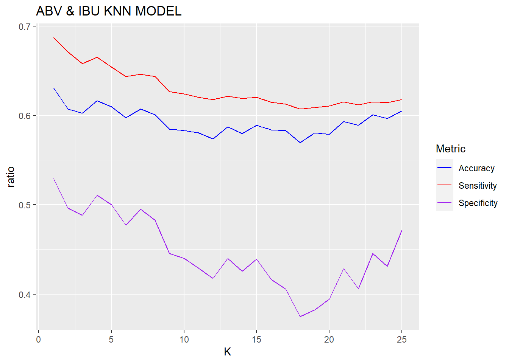
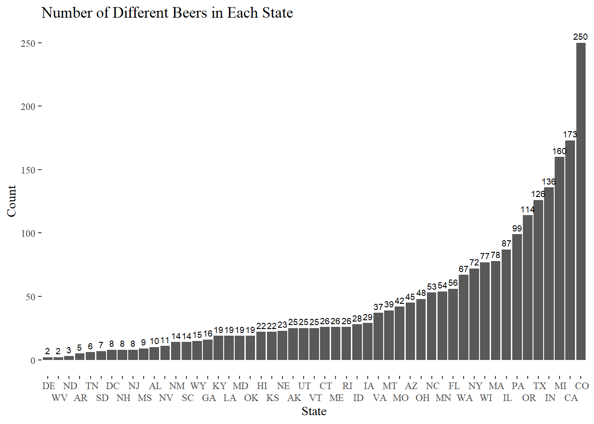
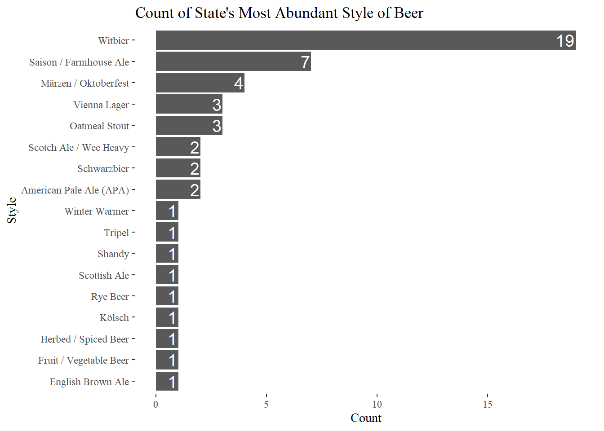
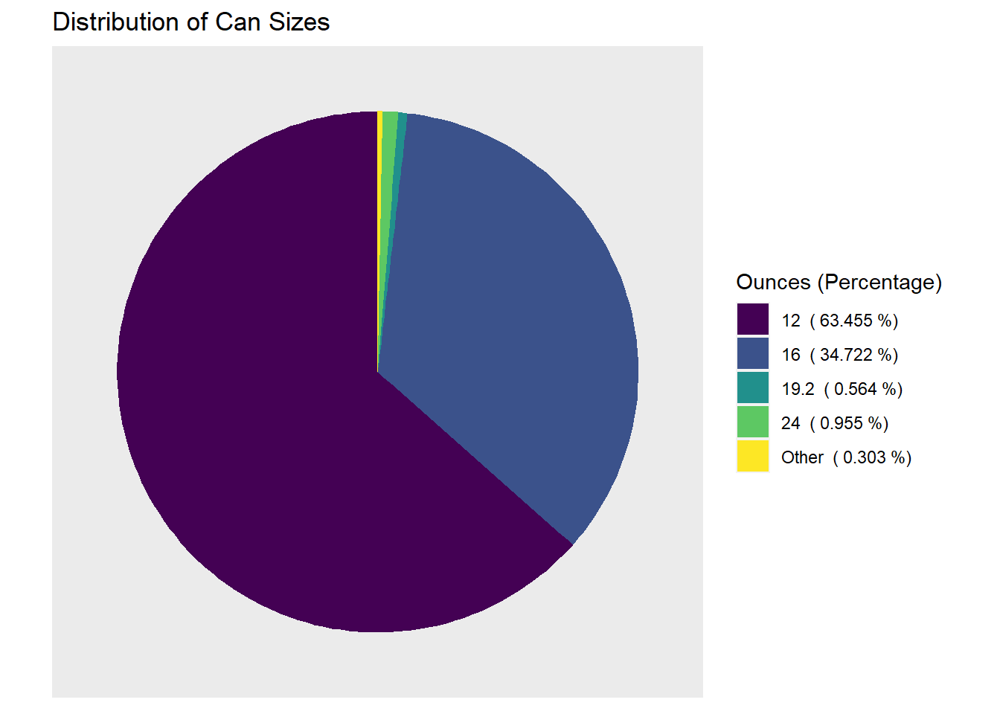

##Project 1 for DS 6306 # We are tasked with conducting a EDA for the Beers and Breweries Data Set that contains 2410 craft beers and 558 Breweries respectivily. # Data documents # #importing the datasets and analyzing the data types
beers = read.csv("D:/Github/MSDS_6306_Doing-Data-Science/Unit 8 and 9 Case Study 1/Beers.csv")
breweries = read.csv("D:/Github/MSDS_6306_Doing-Data-Science/Unit 8 and 9 Case Study 1/Breweries.csv")
summary(beers)## Name Beer_ID ABV IBU Brewery_id
## Length:2410 Min. : 1.0 Min. :0.00100 Min. : 4.00 Min. : 1.0
## Class :character 1st Qu.: 808.2 1st Qu.:0.05000 1st Qu.: 21.00 1st Qu.: 94.0
## Mode :character Median :1453.5 Median :0.05600 Median : 35.00 Median :206.0
## Mean :1431.1 Mean :0.05977 Mean : 42.71 Mean :232.7
## 3rd Qu.:2075.8 3rd Qu.:0.06700 3rd Qu.: 64.00 3rd Qu.:367.0
## Max. :2692.0 Max. :0.12800 Max. :138.00 Max. :558.0
## NA's :62 NA's :1005
## Style Ounces
## Length:2410 Min. : 8.40
## Class :character 1st Qu.:12.00
## Mode :character Median :12.00
## Mean :13.59
## 3rd Qu.:16.00
## Max. :32.00
## summary(breweries)## Brew_ID Name City State
## Min. : 1.0 Length:558 Length:558 Length:558
## 1st Qu.:140.2 Class :character Class :character Class :character
## Median :279.5 Mode :character Mode :character Mode :character
## Mean :279.5
## 3rd Qu.:418.8
## Max. :558.0unique(beers$Style)## [1] "American Pale Lager" "American Pale Ale (APA)"
## [3] "American IPA" "American Double / Imperial IPA"
## [5] "Oatmeal Stout" "American Porter"
## [7] "Saison / Farmhouse Ale" "Belgian IPA"
## [9] "Cider" "Baltic Porter"
## [11] "Tripel" "American Barleywine"
## [13] "Winter Warmer" "American Stout"
## [15] "Fruit / Vegetable Beer" "English Strong Ale"
## [17] "American Black Ale" "Belgian Dark Ale"
## [19] "American Blonde Ale" "American Amber / Red Ale"
## [21] "Berliner Weissbier" "American Brown Ale"
## [23] "American Pale Wheat Ale" "Belgian Strong Dark Ale"
## [25] "Kölsch" "English Pale Ale"
## [27] "American Amber / Red Lager" "English Barleywine"
## [29] "Milk / Sweet Stout" "German Pilsener"
## [31] "Pumpkin Ale" "Belgian Pale Ale"
## [33] "American Pilsner" "American Wild Ale"
## [35] "English Brown Ale" "Altbier"
## [37] "California Common / Steam Beer" "Gose"
## [39] "Cream Ale" "Vienna Lager"
## [41] "Witbier" "American Double / Imperial Stout"
## [43] "Munich Helles Lager" "Schwarzbier"
## [45] "Märzen / Oktoberfest" "Extra Special / Strong Bitter (ESB)"
## [47] "Rye Beer" "Euro Dark Lager"
## [49] "Hefeweizen" "Foreign / Export Stout"
## [51] "Other" "English India Pale Ale (IPA)"
## [53] "Czech Pilsener" "American Strong Ale"
## [55] "Mead" "Euro Pale Lager"
## [57] "American White IPA" "Dortmunder / Export Lager"
## [59] "Irish Dry Stout" "Scotch Ale / Wee Heavy"
## [61] "Munich Dunkel Lager" "Radler"
## [63] "Bock" "English Dark Mild Ale"
## [65] "Irish Red Ale" "Rauchbier"
## [67] "Bière de Garde" "Doppelbock"
## [69] "Dunkelweizen" "Belgian Strong Pale Ale"
## [71] "Dubbel" "Quadrupel (Quad)"
## [73] "Russian Imperial Stout" "English Pale Mild Ale"
## [75] "Maibock / Helles Bock" "Herbed / Spiced Beer"
## [77] "American Adjunct Lager" "Scottish Ale"
## [79] "" "Smoked Beer"
## [81] "Light Lager" "Abbey Single Ale"
## [83] "Roggenbier" "Kristalweizen"
## [85] "American Dark Wheat Ale" "English Stout"
## [87] "Old Ale" "American Double / Imperial Pilsner"
## [89] "Flanders Red Ale" "Keller Bier / Zwickel Bier"
## [91] "American India Pale Lager" "Shandy"
## [93] "Wheat Ale" "American Malt Liquor"
## [95] "English Bitter" "Chile Beer"
## [97] "Grisette" "Flanders Oud Bruin"
## [99] "Braggot" "Low Alcohol Beer"##Question 1 #how many breweries are present in each state
library(ggplot2)
library(ggthemes)
library(tidyverse)## ── Attaching packages ──────────────────────────────────────────────────────── tidyverse 1.3.2 ──
## ✔ tibble 3.1.8 ✔ dplyr 1.0.10
## ✔ tidyr 1.2.1 ✔ stringr 1.5.0
## ✔ readr 2.1.3 ✔ forcats 0.5.2
## ✔ purrr 1.0.0
## ── Conflicts ─────────────────────────────────────────────────────────── tidyverse_conflicts() ──
## ✖ dplyr::filter() masks stats::filter()
## ✖ dplyr::lag() masks stats::lag()breweries %>% group_by(State) %>%
summarise(count = n_distinct(Brew_ID)) %>%
arrange(count) %>%
ggplot(aes(x= reorder(State, +count), y = count)) +
geom_bar(stat="identity", fill ="blue") +
scale_x_discrete(guide = guide_axis(n.dodge=2)) +
geom_text(aes(label=count), vjust=-0.5, color="black",
position = position_dodge(0.9), size=2.5) +
ylab('# of Breweries') +
xlab('States') +
ggtitle('# of Breweries per State') +
theme_pander() #Merging the beer and brewery datasets, both share the Brew/Brewery ID column and contain no missing values so they can be inner joined.
library(dplyr)
#first change one of the datasets column name to match the other
breweries <- breweries %>% rename("Brewery_id"= "Brew_ID")
#Change Name of brewery to avoid duplicate column names
breweries <- breweries %>% rename("Brewery" = "Name")
data <- beers %>% inner_join(breweries, by = "Brewery_id")
#printing of the first 6 rows
head(data) #first 6 rows## Name Beer_ID ABV IBU Brewery_id Style Ounces
## 1 Pub Beer 1436 0.050 NA 409 American Pale Lager 12
## 2 Devil's Cup 2265 0.066 NA 178 American Pale Ale (APA) 12
## 3 Rise of the Phoenix 2264 0.071 NA 178 American IPA 12
## 4 Sinister 2263 0.090 NA 178 American Double / Imperial IPA 12
## 5 Sex and Candy 2262 0.075 NA 178 American IPA 12
## 6 Black Exodus 2261 0.077 NA 178 Oatmeal Stout 12
## Brewery City State
## 1 10 Barrel Brewing Company Bend OR
## 2 18th Street Brewery Gary IN
## 3 18th Street Brewery Gary IN
## 4 18th Street Brewery Gary IN
## 5 18th Street Brewery Gary IN
## 6 18th Street Brewery Gary INtail(data) # last 6 rows## Name Beer_ID ABV IBU Brewery_id Style Ounces
## 2405 Rocky Mountain Oyster Stout 1035 0.075 NA 425 American Stout 12
## 2406 Belgorado 928 0.067 45 425 Belgian IPA 12
## 2407 Rail Yard Ale 807 0.052 NA 425 American Amber / Red Ale 12
## 2408 B3K Black Lager 620 0.055 NA 425 Schwarzbier 12
## 2409 Silverback Pale Ale 145 0.055 40 425 American Pale Ale (APA) 12
## 2410 Rail Yard Ale (2009) 84 0.052 NA 425 American Amber / Red Ale 12
## Brewery City State
## 2405 Wynkoop Brewing Company Denver CO
## 2406 Wynkoop Brewing Company Denver CO
## 2407 Wynkoop Brewing Company Denver CO
## 2408 Wynkoop Brewing Company Denver CO
## 2409 Wynkoop Brewing Company Denver CO
## 2410 Wynkoop Brewing Company Denver COsummary(data)## Name Beer_ID ABV IBU Brewery_id
## Length:2410 Min. : 1.0 Min. :0.00100 Min. : 4.00 Min. : 1.0
## Class :character 1st Qu.: 808.2 1st Qu.:0.05000 1st Qu.: 21.00 1st Qu.: 94.0
## Mode :character Median :1453.5 Median :0.05600 Median : 35.00 Median :206.0
## Mean :1431.1 Mean :0.05977 Mean : 42.71 Mean :232.7
## 3rd Qu.:2075.8 3rd Qu.:0.06700 3rd Qu.: 64.00 3rd Qu.:367.0
## Max. :2692.0 Max. :0.12800 Max. :138.00 Max. :558.0
## NA's :62 NA's :1005
## Style Ounces Brewery City State
## Length:2410 Min. : 8.40 Length:2410 Length:2410 Length:2410
## Class :character 1st Qu.:12.00 Class :character Class :character Class :character
## Mode :character Median :12.00 Mode :character Mode :character Mode :character
## Mean :13.59
## 3rd Qu.:16.00
## Max. :32.00
## #checking string columns for missing cell strings
print(colSums(data == ""))## Name Beer_ID ABV IBU Brewery_id Style Ounces Brewery
## 0 0 NA NA 0 5 0 0
## City State
## 0 0##Address Missing Values #Missing data per column * Name : 0 * Beer_ID : 0 * ABV : 62 * Style : 5 * IBU : 1005 * Name : 0 * Ounces : 0 * Brewery : 0 * City : 0 * State : 0 #There was alot of data in the beer dataset, to alivate the missing data each was searched by hand using the websites untapped.com and beeradvocate.com # if data was found it was filled in using this method here is the number of missing data after search #Missing data per column * Name : 0 * Beer_ID : 0 * ABV : 18 * Style : 3 * IBU : 514 * Name : 0 * Ounces : 0 * Brewery : 0 * City : 0 * State : 0
#commiting the file to csv
write.csv(data, "D:/documents/MSDSDoingDataScience/unfilteredData.csv")
#after filling in mising data bringing back in now filtered data frame
beer_data = read.csv("D:/documents/MSDSDoingDataScience/filteredData.csv")
#summary after hand searching missing data
summary(beer_data)## Name Beer_ID ABV IBU Brewery_id
## Length:2410 Min. : 1.0 Min. :0.00100 Min. : 4.00 Min. : 1.0
## Class :character 1st Qu.: 808.2 1st Qu.:0.05000 1st Qu.: 20.00 1st Qu.: 94.0
## Mode :character Median :1453.5 Median :0.05600 Median : 35.00 Median :206.0
## Mean :1431.1 Mean :0.05972 Mean : 41.35 Mean :232.7
## 3rd Qu.:2075.8 3rd Qu.:0.06700 3rd Qu.: 60.00 3rd Qu.:367.0
## Max. :2692.0 Max. :0.12800 Max. :180.00 Max. :558.0
## NA's :18 NA's :514
## Style Ounces Brewery City State
## Length:2410 Min. : 8.40 Length:2410 Length:2410 Length:2410
## Class :character 1st Qu.:12.00 Class :character Class :character Class :character
## Mode :character Median :12.00 Mode :character Mode :character Mode :character
## Mean :13.59
## 3rd Qu.:16.00
## Max. :32.00
## print(colSums(beer_data == ""))## Name Beer_ID ABV IBU Brewery_id Style Ounces Brewery
## 0 0 NA NA 0 3 0 0
## City State
## 0 0# checking for duplicated beers
dup = beer_data[duplicated(beer_data$Name), ]
dup## Name Beer_ID ABV IBU Brewery_id
## 27 Hell or High Watermelon Wheat (2009) 801 0.049 17 369
## 70 Citra Ass Down 2686 0.080 68 2
## 82 The Brown Note 2674 0.050 20 2
## 110 Barney Flats Oatmeal Stout 1221 0.057 13 172
## 125 Angry Orchard Crisp Apple 1292 0.050 10 435
## 221 Oberon 1989 0.058 10 77
## 305 1327 Pod's ESB 886 0.056 37 381
## 306 1327 Pod's ESB 612 0.056 37 381
## 354 Firestarter India Pale Ale 633 0.066 72 108
## 361 Boston Lager 1310 0.049 30 301
## 364 Boston Lager 1143 0.049 30 301
## 373 Plum St. Porter 1573 0.057 52 220
## 460 East India Pale Ale 566 0.068 47 438
## 486 Pale Alement 2054 0.055 40 25
## 531 Beach Blonde 1927 0.049 10 268
## 536 Lake House 1910 0.046 18 193
## 559 White Zombie Ale 638 0.047 NA 332
## 560 Firewater India Pale Ale 507 0.052 NA 332
## 576 Main St. Virginia Ale 1248 0.050 40 123
## 603 Oktoberfest 2011 0.055 25 142
## 619 Maduro Brown Ale 571 0.055 25 142
## 859 Sunbru K\xf6lsch 178 0.052 17 161
## 899 Point the Way IPA 1296 0.059 60 241
## 917 312 Urban Pale Ale 2202 0.054 30 89
## 919 312 Urban Wheat Ale 1829 0.042 18 89
## 975 Oktoberfest 539 0.059 25 366
## 1036 Hapa Brown Ale 2180 0.064 36 205
## 1077 Nonstop Hef Hop 2399 0.039 20 81
## 1078 Nonstop Hef Hop 2398 0.039 20 81
## 1079 Nonstop Hef Hop 2397 0.039 20 81
## 1080 Nonstop Hef Hop 2396 0.039 20 81
## 1081 Nonstop Hef Hop 2395 0.039 20 81
## 1082 Nonstop Hef Hop 2394 0.039 20 81
## 1083 Nonstop Hef Hop 2393 0.039 20 81
## 1084 Nonstop Hef Hop 2392 0.039 20 81
## 1085 Nonstop Hef Hop 2391 0.039 20 81
## 1086 Nonstop Hef Hop 2390 0.039 20 81
## 1087 Nonstop Hef Hop 2389 0.039 20 81
## 1099 Oktoberfest 2383 0.060 23 121
## 1183 Longboard Island Lager 1220 0.046 18 440
## 1184 Longboard Island Lager 1070 0.046 18 440
## 1185 Longboard Island Lager 590 0.046 18 440
## 1255 #9 360 0.051 20 304
## 1285 The Imperial Texan 1234 0.080 100 162
## 1291 Our Legacy IPA 1135 0.065 60 300
## 1321 Tsunami IPA 2185 0.072 75 204
## 1340 Grazias 2663 0.063 30 4
## 1367 Clear Creek Ice 2280 0.062 NA 135
## 1369 Mountain Crest 2278 0.055 NA 135
## 1374 Boxer 2273 0.050 NA 135
## 1427 Narragansett Summer Ale 403 0.042 24 144
## 1455 Shift 578 0.050 29 83
## 1456 Ranger IPA 564 0.065 70 83
## 1457 Fat Tire Amber Ale 563 0.052 18 83
## 1517 Slow Ride 2069 0.048 35 185
## 1558 One Nut Brown 1751 0.050 NA 167
## 1561 Dale's Pale Ale 1252 0.065 65 167
## 1564 oSKAr the G'Rauch 992 0.085 NA 167
## 1565 Dale's Pale Ale 955 0.065 65 167
## 1580 Mama's Little Yella Pils 7 0.053 35 167
## 1584 Dale's Pale Ale 1 0.065 65 167
## 1600 Deviant Dale's IPA 1328 0.080 85 390
## 1601 Old Chub 1175 0.080 35 390
## 1602 Dale's Pale Ale 1166 0.065 65 390
## 1603 Dale's Pale Ale 1065 0.065 65 390
## 1676 Morning Wood Wheat (Current) 130 0.059 14 136
## 1697 Vanilla Porter 2513 0.047 25 69
## 1701 Long Hammer IPA 583 0.065 44 488
## 1715 Rye Porter 710 0.070 65 387
## 1719 Colorado Red Ale 220 0.062 45 387
## 1720 Miner's Gold 219 0.058 10 387
## 1738 Gose 2580 0.035 NA 43
## 1745 Oktoberfest 2373 0.062 20 44
## 1766 Lazy Daze Lager 97 0.055 10 230
## 1781 CAPT Black IPA 883 0.073 55 398
## 1790 Oktoberfest 1995 0.055 20 31
## 1852 Torpedo 426 0.072 65 84
## 1853 Sierra Nevada Pale Ale 400 0.056 37 84
## 1893 Modus Hoperandi 67 0.068 65 265
## 1914 Alter Ego 2405 0.062 33 116
## 1925 Dagger Falls IPA 1595 0.063 100 310
## 1938 Dagger Falls IPA 879 0.063 100 310
## 1953 Suzy B Dirty Blonde Ale 1118 0.050 20 134
## 1954 Devil's Harvest Extra Pale Ale 1117 0.058 60 134
## 1967 Pine Belt Pale Ale 45 0.065 45 119
## 1968 Bombshell Blonde 44 0.050 20 119
## 1977 Bitter Biker Double IPA 1821 0.096 88 176
## 1984 Special Amber 445 0.050 22 499
## 1990 Northern Lights India Pale Ale 368 0.065 52 384
## 1998 Point Special 2228 0.047 9 132
## 2007 Point Nude Beach Summer Wheat 816 0.050 7 132
## 2011 Point Oktoberfest 456 0.057 15 132
## 2016 Point Special Lager 138 0.047 9 132
## 2019 Brontide 1631 0.050 NA 256
## 2057 The Deuce 934 0.070 85 26
## 2062 Chaka 660 0.080 NA 26
## 2075 BLAKKR 1739 0.099 85 62
## 2099 TailGate IPA 662 0.050 44 450
## 2102 Blacktop Blonde 362 0.050 19 450
## 2103 TailGate Hefeweizen 361 0.049 28 450
## Style Ounces Brewery
## 27 Fruit / Vegetable Beer 12.0 21st Amendment Brewery
## 70 American Double / Imperial IPA 16.0 Against the Grain Brewery
## 82 English Brown Ale 16.0 Against the Grain Brewery
## 110 Oatmeal Stout 12.0 Anderson Valley Brewing Company
## 125 Cider 12.0 Angry Orchard Cider Company
## 221 American Pale Wheat Ale 16.0 Bell's Brewery
## 305 Extra Special / Strong Bitter (ESB) 12.0 Blue Blood Brewing Company
## 306 Extra Special / Strong Bitter (ESB) 12.0 Blue Blood Brewing Company
## 354 American IPA 16.0 Bonfire Brewing Company
## 361 Vienna Lager 12.0 Boston Beer Company
## 364 Vienna Lager 12.0 Boston Beer Company
## 373 American Porter 12.0 Bozeman Brewing Company
## 460 English India Pale Ale (IPA) 12.0 Brooklyn Brewery
## 486 American Pale Ale (APA) 16.0 Burn 'Em Brewing
## 531 American Blonde Ale 16.0 Cape Cod Beer
## 536 Munich Helles Lager 16.0 Capital Brewery
## 559 Witbier 12.0 Catawba Brewing Company
## 560 American IPA 12.0 Catawba Brewing Company
## 576 Altbier 12.0 Center of the Universe Brewing C...
## 603 M\xe4rzen / Oktoberfest 12.0 Cigar City Brewing Company
## 619 American Brown Ale 12.0 Cigar City Brewing Company
## 859 K\xf6lsch 12.0 Four Peaks Brewing Company
## 899 American IPA 12.0 Golden Road Brewing
## 917 American Pale Ale (APA) 12.0 Goose Island Brewing Company
## 919 American Pale Wheat Ale 12.0 Goose Island Brewing Company
## 975 M\xe4rzen / Oktoberfest 16.0 Great River Brewery
## 1036 American Brown Ale 12.0 Hawai'i Nui Brewing Co.
## 1077 American Pale Wheat Ale 16.0 Hopworks Urban Brewery
## 1078 American Pale Wheat Ale 16.0 Hopworks Urban Brewery
## 1079 American Pale Wheat Ale 16.0 Hopworks Urban Brewery
## 1080 American Pale Wheat Ale 16.0 Hopworks Urban Brewery
## 1081 American Pale Wheat Ale 16.0 Hopworks Urban Brewery
## 1082 American Pale Wheat Ale 16.0 Hopworks Urban Brewery
## 1083 American Pale Wheat Ale 16.0 Hopworks Urban Brewery
## 1084 American Pale Wheat Ale 16.0 Hopworks Urban Brewery
## 1085 American Pale Wheat Ale 16.0 Hopworks Urban Brewery
## 1086 American Pale Wheat Ale 16.0 Hopworks Urban Brewery
## 1087 American Pale Wheat Ale 16.0 Hopworks Urban Brewery
## 1099 M\xe4rzen / Oktoberfest 16.0 Horny Goat Brew Pub
## 1183 American Amber / Red Lager 16.0 Kona Brewing Company
## 1184 American Amber / Red Lager 12.0 Kona Brewing Company
## 1185 American Amber / Red Lager 12.0 Kona Brewing Company
## 1255 Fruit / Vegetable Beer 12.0 Magic Hat Brewing Company
## 1285 American Double / Imperial IPA 12.0 Martin House Brewing Company
## 1291 American IPA 16.0 Matt Brewing Company
## 1321 American IPA 12.0 Mehana Brewing Co.
## 1340 Cream Ale 16.0 Mike Hess Brewing Company
## 1367 American Pale Lager 12.0 Minhas Craft Brewery
## 1369 American Pale Lager 12.0 Minhas Craft Brewery
## 1374 American Adjunct Lager 12.0 Minhas Craft Brewery
## 1427 American Pale Wheat Ale 16.0 Narragansett Brewing Company
## 1455 American Pale Lager 16.0 New Belgium Brewing Company
## 1456 American IPA 16.0 New Belgium Brewing Company
## 1457 American Amber / Red Ale 16.0 New Belgium Brewing Company
## 1517 American Pale Ale (APA) 12.0 Oasis Texas Brewing Company
## 1558 English Brown Ale 12.0 Oskar Blues Brewery
## 1561 American Pale Ale (APA) 12.0 Oskar Blues Brewery
## 1564 American IPA 16.0 Oskar Blues Brewery
## 1565 American Pale Ale (APA) 19.2 Oskar Blues Brewery
## 1580 Czech Pilsener 12.0 Oskar Blues Brewery
## 1584 American Pale Ale (APA) 12.0 Oskar Blues Brewery
## 1600 American Double / Imperial IPA 16.0 Oskar Blues Brewery (North Carol...
## 1601 Scottish Ale 12.0 Oskar Blues Brewery (North Carol...
## 1602 American Pale Ale (APA) 19.2 Oskar Blues Brewery (North Carol...
## 1603 American Pale Ale (APA) 12.0 Oskar Blues Brewery (North Carol...
## 1676 American Pale Wheat Ale 12.0 Pug Ryan's Brewery
## 1697 American Porter 16.0 Red Shedman Farm Brewery and Hop...
## 1701 American IPA 12.0 Redhook Brewery
## 1715 American Porter 16.0 Revolution Brewing
## 1719 American Amber / Red Ale 12.0 Revolution Brewing
## 1720 American Blonde Ale 12.0 Revolution Brewing
## 1738 Gose 16.0 Rising Tide Brewing Company
## 1745 M\xe4rzen / Oktoberfest 12.0 Rivertowne Brewing Company
## 1766 American Adjunct Lager 12.0 Rochester Mills Brewing Company
## 1781 American Black Ale 16.0 Ruhstaller Beer Company
## 1790 M\xe4rzen / Oktoberfest 12.0 SanTan Brewing Company
## 1852 American IPA 16.0 Sierra Nevada Brewing Company
## 1853 American Pale Ale (APA) 12.0 Sierra Nevada Brewing Company
## 1893 American IPA 12.0 Ska Brewing Company
## 1914 Saison / Farmhouse Ale 12.0 Smartmouth Brewing Company
## 1925 American IPA 12.0 Sockeye Brewing Company
## 1938 American IPA 12.0 Sockeye Brewing Company
## 1953 American Blonde Ale 16.0 Southern Prohibition Brewing Com...
## 1954 American Pale Ale (APA) 16.0 Southern Prohibition Brewing Com...
## 1967 American Pale Ale (APA) 16.0 Southern Star Brewing Company
## 1968 American Blonde Ale 12.0 Southern Star Brewing Company
## 1977 American Double / Imperial IPA 12.0 Spiteful Brewing Company
## 1984 Vienna Lager 12.0 Sprecher Brewing Company
## 1990 American IPA 12.0 Starr Hill Brewery
## 1998 American Adjunct Lager 12.0 Stevens Point Brewery
## 2007 American Pale Wheat Ale 12.0 Stevens Point Brewery
## 2011 M\xe4rzen / Oktoberfest 12.0 Stevens Point Brewery
## 2016 American Adjunct Lager 12.0 Stevens Point Brewery
## 2019 American Black Ale 12.0 Stillwater Artisanal Ales
## 2057 American Brown Ale 16.0 Sun King Brewing Company
## 2062 Belgian Strong Pale Ale 16.0 Sun King Brewing Company
## 2075 American Black Ale 16.0 Surly Brewing Company
## 2099 American IPA 12.0 TailGate Beer
## 2102 American Blonde Ale 12.0 TailGate Beer
## 2103 Hefeweizen 12.0 TailGate Beer
## City State
## 27 San Francisco CA
## 70 Louisville KY
## 82 Louisville KY
## 110 Boonville CA
## 125 Cincinnati OH
## 221 Kalamazoo MI
## 305 Lincoln NE
## 306 Lincoln NE
## 354 Eagle CO
## 361 Boston MA
## 364 Boston MA
## 373 Bozeman MT
## 460 Brooklyn NY
## 486 Michigan City IN
## 531 Hyannis MA
## 536 Middleton WI
## 559 Morganton NC
## 560 Morganton NC
## 576 Ashland VA
## 603 Tampa FL
## 619 Tampa FL
## 859 Tempe AZ
## 899 Los Angeles CA
## 917 Chicago IL
## 919 Chicago IL
## 975 Davenport IA
## 1036 Hilo HI
## 1077 Portland OR
## 1078 Portland OR
## 1079 Portland OR
## 1080 Portland OR
## 1081 Portland OR
## 1082 Portland OR
## 1083 Portland OR
## 1084 Portland OR
## 1085 Portland OR
## 1086 Portland OR
## 1087 Portland OR
## 1099 Milwaukee WI
## 1183 Kona HI
## 1184 Kona HI
## 1185 Kona HI
## 1255 South Burlington VT
## 1285 Fort Worth TX
## 1291 Utica NY
## 1321 Hilo HI
## 1340 San Diego CA
## 1367 Monroe WI
## 1369 Monroe WI
## 1374 Monroe WI
## 1427 Providence RI
## 1455 Fort Collins CO
## 1456 Fort Collins CO
## 1457 Fort Collins CO
## 1517 Austin TX
## 1558 Longmont CO
## 1561 Longmont CO
## 1564 Longmont CO
## 1565 Longmont CO
## 1580 Longmont CO
## 1584 Longmont CO
## 1600 Brevard NC
## 1601 Brevard NC
## 1602 Brevard NC
## 1603 Brevard NC
## 1676 Dillon CO
## 1697 Mt. Airy MD
## 1701 Woodinville WA
## 1715 Paonia CO
## 1719 Paonia CO
## 1720 Paonia CO
## 1738 Portland ME
## 1745 Export PA
## 1766 Rochester MI
## 1781 Sacramento CA
## 1790 Chandler AZ
## 1852 Chico CA
## 1853 Chico CA
## 1893 Durango CO
## 1914 Norfolk VA
## 1925 Boise ID
## 1938 Boise ID
## 1953 Hattiesburg MS
## 1954 Hattiesburg MS
## 1967 Conroe TX
## 1968 Conroe TX
## 1977 Chicago IL
## 1984 Glendale WI
## 1990 Crozet VA
## 1998 Stevens Point WI
## 2007 Stevens Point WI
## 2011 Stevens Point WI
## 2016 Stevens Point WI
## 2019 Baltimore MD
## 2057 Indianapolis IN
## 2062 Indianapolis IN
## 2075 Brooklyn Center MN
## 2099 San Diego CA
## 2102 San Diego CA
## 2103 San Diego CA
## [ reached 'max' / getOption("max.print") -- omitted 6 rows ]sprintf("There are a total of %d duplicated rows consisting of %d different beers", sum(duplicated(beer_data$Name)),length(unique(dup$Name))) ## [1] "There are a total of 106 duplicated rows consisting of 83 different beers"beer_data <- beer_data[!duplicated(beer_data$Name),]
beer_data## Name Beer_ID ABV IBU Brewery_id
## 1 Pub Beer 1436 0.050 18 409
## 2 Devil's Cup 2265 0.066 NA 178
## 3 Rise of the Phoenix 2264 0.071 61 178
## 4 Sinister 2263 0.090 30 178
## 5 Sex and Candy 2262 0.075 NA 178
## 6 Black Exodus 2261 0.077 NA 178
## 7 Lake Street Express 2260 0.045 NA 178
## 8 Foreman 2259 0.065 NA 178
## 9 Jade 2258 0.055 NA 178
## 10 Cone Crusher 2131 0.086 NA 178
## 11 Sophomoric Saison 2099 0.072 NA 178
## 12 Regional Ring Of Fire 2098 0.073 NA 178
## 13 Garce Selé 2097 0.069 NA 178
## 14 Troll Destroyer 1980 0.085 NA 178
## 15 Bitter Bitch 1979 0.061 60 178
## 16 Ginja Ninja 2318 0.060 NA 155
## 17 Cherried Away 2170 0.060 NA 155
## 18 Rhubarbarian 2169 0.060 NA 155
## 19 BrightCider 1502 0.060 NA 155
## 20 He Said Baltic-Style Porter 1593 0.082 NA 369
## 21 He Said Belgian-Style Tripel 1592 0.082 NA 369
## 22 Lower De Boom 1036 0.099 92 369
## 23 Fireside Chat 1024 0.079 45 369
## 24 Marooned On Hog Island 976 0.079 NA 369
## 25 Bitter American 876 0.044 42 369
## 26 Hell or High Watermelon Wheat (2009) 802 0.049 17 369
## 28 21st Amendment Watermelon Wheat Beer (2006) 800 0.049 17 369
## 29 21st Amendment IPA (2006) 799 0.070 70 369
## 30 Brew Free! or Die IPA (2008) 797 0.070 70 369
## 31 Brew Free! or Die IPA (2009) 796 0.070 70 369
## 32 Special Edition: Allies Win The War! 531 0.085 52 369
## 33 Hop Crisis 432 0.097 94 369
## 34 Bitter American (2011) 353 0.044 42 369
## 35 Fireside Chat (2010) 321 0.079 45 369
## 36 Back in Black 173 0.068 65 369
## 37 Monk's Blood 11 0.083 35 369
## 38 Brew Free! or Die IPA 10 0.070 65 369
## 39 Hell or High Watermelon Wheat 9 0.049 17 369
## 40 Bimini Twist 2519 0.070 82 68
## 41 Beach Blonde 2518 0.050 23 68
## 42 Rod Bender Red 2517 0.059 28 68
## 43 Passion Fruit Prussia 2545 0.035 11 61
## 44 Send Help 2544 0.045 18 61
## 45 Cast Iron Oatmeal Brown 2324 0.055 NA 61
## 46 Reprise Centennial Red 2288 0.060 38 61
## 47 Alter Ego 2287 0.055 68 61
## 48 Divided Sky 2286 0.065 NA 61
## 49 Resurrected 2285 0.065 NA 61
## 50 Contact High 1870 0.050 28 61
## 51 Galaxyfest 2603 0.065 38 28
## 52 Citrafest 2602 0.050 45 28
## 53 Barn Yeti 2220 0.090 25 28
## 54 Scarecrow 2219 0.069 65 28
## 55 Ironman 2218 0.090 50 28
## 56 Honey Kolsch 2217 0.046 15 28
## 57 Copperhead Amber 2216 0.052 18 28
## 58 Rude Parrot IPA 972 0.059 75 482
## 59 British Pale Ale (2010) 866 0.054 30 482
## 60 British Pale Ale 48 0.054 30 482
## 61 Ballz Deep Double IPA 47 0.084 82 482
## 62 Wolfman's Berliner 1583 0.038 NA 374
## 63 Colorado Native 1165 0.055 26 463
## 64 Colorado Native (2011) 431 0.055 26 463
## 65 Jockamo IPA 516 0.065 52 534
## 66 Purple Haze 515 0.042 13 534
## 67 Abita Amber 514 0.045 17 534
## 68 Citra Ass Down 2540 0.082 68 63
## 69 The Brown Note 2539 0.050 20 63
## 71 London Balling 2685 0.125 80 2
## 72 35 K 2684 0.077 25 2
## 73 A Beer 2683 0.042 42 2
## 74 Rules are Rules 2682 0.050 25 2
## 75 Flesh Gourd'n 2681 0.066 21 2
## 76 Sho'nuff 2680 0.040 13 2
## 77 Bloody Show 2679 0.055 17 2
## 78 Rico Sauvin 2678 0.076 68 2
## 79 Coq de la Marche 2677 0.051 38 2
## 80 Kamen Knuddeln 2676 0.065 NA 2
## 81 Pile of Face 2675 0.060 65 2
## 83 Maylani's Coconut Stout 1594 0.053 35 368
## 84 Oatmeal PSA 1162 0.050 35 368
## 85 Pre Flight Pilsner 1137 0.052 33 368
## 86 P-Town Pilsner 2403 0.040 20 118
## 87 Klickitat Pale Ale 2402 0.053 36 118
## 88 Yellow Wolf Imperial IPA 2401 0.082 103 118
## 89 Freeride APA 1921 0.053 40 271
## 90 Alaskan Amber 1920 0.053 18 271
## 91 Hopalicious 2501 0.057 52 74
## 92 Kentucky K\xf6lsch 1535 0.043 14 389
## 93 Kentucky IPA 1149 0.065 45 389
## 94 Dusty Trail Pale Ale 1474 0.054 40 402
## 95 Damnesia 1473 0.062 70 402
## 96 Desolation IPA 837 0.062 43 402
## 97 Liberty Ale 2592 0.059 47 36
## 98 IPA 2578 0.065 NA 36
## 99 Summer Wheat 2577 0.045 NA 36
## 100 California Lager 2103 0.049 19 36
## 101 Brotherhood Steam 2102 0.056 NA 36
## 102 Blood Orange Gose 2291 0.042 12 172
## 103 Keebarlin' Pale Ale 1818 0.042 40 172
## Style Ounces Brewery City
## 1 American Pale Lager 12.0 10 Barrel Brewing Company Bend
## 2 American Pale Ale (APA) 12.0 18th Street Brewery Gary
## 3 American IPA 12.0 18th Street Brewery Gary
## 4 American Double / Imperial IPA 12.0 18th Street Brewery Gary
## 5 American IPA 12.0 18th Street Brewery Gary
## 6 Oatmeal Stout 12.0 18th Street Brewery Gary
## 7 American Pale Ale (APA) 12.0 18th Street Brewery Gary
## 8 American Porter 12.0 18th Street Brewery Gary
## 9 American Pale Ale (APA) 12.0 18th Street Brewery Gary
## 10 American Double / Imperial IPA 12.0 18th Street Brewery Gary
## 11 Saison / Farmhouse Ale 12.0 18th Street Brewery Gary
## 12 Saison / Farmhouse Ale 12.0 18th Street Brewery Gary
## 13 Saison / Farmhouse Ale 12.0 18th Street Brewery Gary
## 14 Belgian IPA 12.0 18th Street Brewery Gary
## 15 American Pale Ale (APA) 12.0 18th Street Brewery Gary
## 16 Cider 12.0 2 Towns Ciderhouse Corvallis
## 17 Cider 12.0 2 Towns Ciderhouse Corvallis
## 18 Cider 12.0 2 Towns Ciderhouse Corvallis
## 19 Cider 12.0 2 Towns Ciderhouse Corvallis
## 20 Baltic Porter 12.0 21st Amendment Brewery San Francisco
## 21 Tripel 12.0 21st Amendment Brewery San Francisco
## 22 American Barleywine 8.4 21st Amendment Brewery San Francisco
## 23 Winter Warmer 12.0 21st Amendment Brewery San Francisco
## 24 American Stout 12.0 21st Amendment Brewery San Francisco
## 25 American Pale Ale (APA) 12.0 21st Amendment Brewery San Francisco
## 26 Fruit / Vegetable Beer 12.0 21st Amendment Brewery San Francisco
## 28 Fruit / Vegetable Beer 12.0 21st Amendment Brewery San Francisco
## 29 American IPA 12.0 21st Amendment Brewery San Francisco
## 30 American IPA 12.0 21st Amendment Brewery San Francisco
## 31 American IPA 12.0 21st Amendment Brewery San Francisco
## 32 English Strong Ale 12.0 21st Amendment Brewery San Francisco
## 33 American Double / Imperial IPA 12.0 21st Amendment Brewery San Francisco
## 34 American Pale Ale (APA) 12.0 21st Amendment Brewery San Francisco
## 35 Winter Warmer 12.0 21st Amendment Brewery San Francisco
## 36 American Black Ale 12.0 21st Amendment Brewery San Francisco
## 37 Belgian Dark Ale 12.0 21st Amendment Brewery San Francisco
## 38 American IPA 12.0 21st Amendment Brewery San Francisco
## 39 Fruit / Vegetable Beer 12.0 21st Amendment Brewery San Francisco
## 40 American IPA 12.0 3 Daughters Brewing St Petersburg
## 41 American Blonde Ale 12.0 3 Daughters Brewing St Petersburg
## 42 American Amber / Red Ale 12.0 3 Daughters Brewing St Petersburg
## 43 Berliner Weissbier 12.0 4 Hands Brewing Company Saint Louis
## 44 American Blonde Ale 12.0 4 Hands Brewing Company Saint Louis
## 45 American Brown Ale 12.0 4 Hands Brewing Company Saint Louis
## 46 American Amber / Red Ale 12.0 4 Hands Brewing Company Saint Louis
## 47 American Black Ale 12.0 4 Hands Brewing Company Saint Louis
## 48 American IPA 12.0 4 Hands Brewing Company Saint Louis
## 49 American IPA 12.0 4 Hands Brewing Company Saint Louis
## 50 American Pale Wheat Ale 12.0 4 Hands Brewing Company Saint Louis
## 51 American IPA 16.0 450 North Brewing Company Columbus
## 52 American IPA 16.0 450 North Brewing Company Columbus
## 53 Belgian Strong Dark Ale 16.0 450 North Brewing Company Columbus
## 54 American IPA 16.0 450 North Brewing Company Columbus
## 55 English Strong Ale 16.0 450 North Brewing Company Columbus
## 56 K\xf6lsch 16.0 450 North Brewing Company Columbus
## 57 Belgian Dark Ale 16.0 450 North Brewing Company Columbus
## 58 American IPA 16.0 7 Seas Brewing Company Gig Harbor
## 59 English Pale Ale 16.0 7 Seas Brewing Company Gig Harbor
## 60 English Pale Ale 16.0 7 Seas Brewing Company Gig Harbor
## 61 American Double / Imperial IPA 16.0 7 Seas Brewing Company Gig Harbor
## 62 Berliner Weissbier 12.0 7venth Sun Dunedin
## 63 American Amber / Red Lager 12.0 AC Golden Brewing Company Golden
## 64 American Amber / Red Lager 12.0 AC Golden Brewing Company Golden
## 65 American IPA 12.0 Abita Brewing Company Abita Springs
## 66 Fruit / Vegetable Beer 12.0 Abita Brewing Company Abita Springs
## 67 American Amber / Red Lager 12.0 Abita Brewing Company Abita Springs
## 68 American IPA 16.0 Against The Grain Brewery Louisville
## 69 American Brown Ale 16.0 Against The Grain Brewery Louisville
## 71 English Barleywine 16.0 Against the Grain Brewery Louisville
## 72 Milk / Sweet Stout 16.0 Against the Grain Brewery Louisville
## 73 American Pale Ale (APA) 16.0 Against the Grain Brewery Louisville
## 74 German Pilsener 16.0 Against the Grain Brewery Louisville
## 75 Pumpkin Ale 16.0 Against the Grain Brewery Louisville
## 76 Belgian Pale Ale 16.0 Against the Grain Brewery Louisville
## 77 American Pilsner 16.0 Against the Grain Brewery Louisville
## 78 American Double / Imperial IPA 16.0 Against the Grain Brewery Louisville
## 79 Saison / Farmhouse Ale 16.0 Against the Grain Brewery Louisville
## 80 American Wild Ale 16.0 Against the Grain Brewery Louisville
## 81 American IPA 16.0 Against the Grain Brewery Louisville
## 83 American Stout 16.0 Airways Brewing Company Kent
## 84 American Pale Ale (APA) 16.0 Airways Brewing Company Kent
## 85 American Pilsner 16.0 Airways Brewing Company Kent
## 86 American Pilsner 12.0 Alameda Brewing Portland
## 87 American Pale Ale (APA) 12.0 Alameda Brewing Portland
## 88 American Double / Imperial IPA 12.0 Alameda Brewing Portland
## 89 American Pale Ale (APA) 12.0 Alaskan Brewing Company Juneau
## 90 Altbier 12.0 Alaskan Brewing Company Juneau
## 91 American Pale Ale (APA) 12.0 Ale Asylum Madison
## 92 K\xf6lsch 16.0 Alltech's Lexington Brewing Company Lexington
## 93 American IPA 16.0 Alltech's Lexington Brewing Company Lexington
## 94 American Pale Ale (APA) 16.0 Amnesia Brewing Company Washougal
## 95 American IPA 16.0 Amnesia Brewing Company Washougal
## 96 American IPA 16.0 Amnesia Brewing Company Washougal
## 97 American IPA 12.0 Anchor Brewing Company San Francisco
## 98 American IPA 12.0 Anchor Brewing Company San Francisco
## 99 American Pale Wheat Ale 12.0 Anchor Brewing Company San Francisco
## 100 American Amber / Red Lager 12.0 Anchor Brewing Company San Francisco
## 101 California Common / Steam Beer 12.0 Anchor Brewing Company San Francisco
## 102 Gose 12.0 Anderson Valley Brewing Company Boonville
## 103 American Pale Ale (APA) 12.0 Anderson Valley Brewing Company Boonville
## State
## 1 OR
## 2 IN
## 3 IN
## 4 IN
## 5 IN
## 6 IN
## 7 IN
## 8 IN
## 9 IN
## 10 IN
## 11 IN
## 12 IN
## 13 IN
## 14 IN
## 15 IN
## 16 OR
## 17 OR
## 18 OR
## 19 OR
## 20 CA
## 21 CA
## 22 CA
## 23 CA
## 24 CA
## 25 CA
## 26 CA
## 28 CA
## 29 CA
## 30 CA
## 31 CA
## 32 CA
## 33 CA
## 34 CA
## 35 CA
## 36 CA
## 37 CA
## 38 CA
## 39 CA
## 40 FL
## 41 FL
## 42 FL
## 43 MO
## 44 MO
## 45 MO
## 46 MO
## 47 MO
## 48 MO
## 49 MO
## 50 MO
## 51 IN
## 52 IN
## 53 IN
## 54 IN
## 55 IN
## 56 IN
## 57 IN
## 58 WA
## 59 WA
## 60 WA
## 61 WA
## 62 FL
## 63 CO
## 64 CO
## 65 LA
## 66 LA
## 67 LA
## 68 KY
## 69 KY
## 71 KY
## 72 KY
## 73 KY
## 74 KY
## 75 KY
## 76 KY
## 77 KY
## 78 KY
## 79 KY
## 80 KY
## 81 KY
## 83 WA
## 84 WA
## 85 WA
## 86 OR
## 87 OR
## 88 OR
## 89 AK
## 90 AK
## 91 WI
## 92 KY
## 93 KY
## 94 WA
## 95 WA
## 96 WA
## 97 CA
## 98 CA
## 99 CA
## 100 CA
## 101 CA
## 102 CA
## 103 CA
## [ reached 'max' / getOption("max.print") -- omitted 2204 rows ]sprintf("There are now only %d beers in the dataframe", length(beer_data$Name))## [1] "There are now only 2304 beers in the dataframe"##4. Compute the median alcohol content and international bitterness unit for each state. Plot a bar chart to compare.
library(ggplot2)
library(ggpubr)
library(ggthemes)
options(repr.plot.width = 10, repr.plot.height =4)
abv <- beer_data %>%
filter(!is.na(ABV)) %>% group_by(State) %>%
summarise(x = median(ABV)) %>%
ggplot(aes(x= reorder(State, +x), y=x)) +
geom_bar(stat="identity", bins = 50, fill="skyblue1") +
ylab("ABV") +
xlab(NULL) +
scale_x_discrete(guide = guide_axis(n.dodge=2)) +
theme_tufte()## Warning in geom_bar(stat = "identity", bins = 50, fill = "skyblue1"): Ignoring unknown
## parameters: `bins`ibu <- beer_data %>%
filter(!is.na(IBU)) %>% group_by(State) %>%
summarise(x = median(IBU)) %>%
ggplot(aes(x=reorder(State, +x), y=x)) +
geom_bar(stat="identity", bins = 50, fill="skyblue1") +
xlab("State") +
ylab("IBU") +
scale_x_discrete(guide = guide_axis(n.dodge=2)) +
theme_tufte()## Warning in geom_bar(stat = "identity", bins = 50, fill = "skyblue1"): Ignoring unknown
## parameters: `bins`#combining plots together
p <- ggarrange(abv, ibu, ncol = 1, nrow = 2, align = "v")
annotate_figure(p, top = text_grob("Median ABV and IBU per State", face ="bold", size=16, family="serif")) + theme_tufte() ##Which state has the maximum alcoholic (ABV) beer? Which state has the most bitter (IBU) beer?
#options(repr.plot.width = 10, repr.plot.height =4)
beer_data %>%
filter(!is.na(ABV)) %>% group_by(State) %>%
summarise(x = max(ABV)) %>%
top_n(3, x) %>%
ggplot(aes(x= State, y=x)) +
geom_bar(stat="identity", fill="skyblue1") +
ylab("ABV") +
xlab(NULL) +
ggtitle('Top 3 States With Highest ABV') +
theme_tufte()
beer_data %>%
filter(!is.na(IBU)) %>% group_by(State) %>%
summarise(x = max(IBU)) %>%
top_n(3, x) %>%
ggplot(aes(x=State, y=x)) +
geom_bar(stat="identity", fill="skyblue1") +
ylab("IBU") +
ggtitle('Top 3 States With Highest IBU') +
theme_tufte()
beer_data %>%
filter(!is.na(ABV)) %>% group_by(State) %>%
summarise(x = max(ABV)) %>% top_n(3,x)## # A tibble: 3 × 2
## State x
## <chr> <dbl>
## 1 " CO" 0.128
## 2 " IN" 0.12
## 3 " KY" 0.125##Comment on the summary statistics and distribution of the ABV variable.
library(ggplot2)
library(dplyr)
library(hrbrthemes)## Registering Windows fonts with R## NOTE: Either Arial Narrow or Roboto Condensed fonts are required to use these themes.## Please use hrbrthemes::import_roboto_condensed() to install Roboto Condensed and## if Arial Narrow is not on your system, please see https://bit.ly/arialnarrowlibrary(viridis)## Loading required package: viridisLitebeer_data %>% filter(!is.na(ABV)) %>%
ggplot(aes(x=ABV)) +
geom_boxplot(color="black") +
geom_vline(aes(xintercept= mean(ABV)), color ="red") +
geom_text(aes(mean(ABV), 0, label=paste("Mean :",round(mean(ABV), digits= 4)), vjust = -12.7, hjust = -1.99)) +
geom_text(aes(mean(ABV), 0, label=paste("SD :",round(sd(ABV), digits= 4)), vjust = -11.5, hjust = -2.34)) +
geom_text(aes(mean(ABV), 0, label=paste("Min :",round(min(ABV), digits= 4)), vjust = -10.3, hjust = -2.57)) +
geom_text(aes(mean(ABV), 0, label=paste("Max :",round(max(ABV), digits= 4)), vjust = -9.2, hjust = -2.44)) +
geom_text(aes(mean(ABV), 0, label=paste("Med :",round(median(ABV), digits= 4)), vjust = -8.1, hjust = -2.17)) +
ggtitle("Distribution of ABV") +
ylab(NULL) +
theme_stata() ##Is there an apparent relationship between the bitterness of the beer and its alcoholic content? Draw a scatter plot. Make your best judgment of a relationship and EXPLAIN your answer. #after conducting the visualization a non parmeteric kendall tau correlation test was used. It found that there is a moderate positive relationship between ABV vs. IBU and this value was found to be statistically significant p<0.0001.
beer_data %>% filter(!is.na(ABV) & !is.na(IBU)) %>%
ggplot(aes(x= ABV, y= IBU)) +
geom_point() +
geom_smooth(method=lm, se=FALSE) +
ggtitle(paste0("ABV vs. IBU relationship with coorleation cofficent of ", round(cor.test(beer_data$ABV,beer_data$IBU, method="pearson")$estimate, digits = 4), "\n and a pvalue : ", ... = cor.test(beer_data$ABV,beer_data$IBU, method="pearson")$p.value) ) +
theme_tufte()## `geom_smooth()` using formula = 'y ~ x'
cor.test(beer_data$ABV, beer_data$IBU)[3] ## $p.value
## [1] 2.028497e-191##8. Budweiser would also like to investigate the difference with respect to IBU and ABV between IPAs (India Pale Ales) and other types of Ale (any beer with “Ale” in its name other than IPA). You decide to use KNN classification to investigate this relationship. Provide statistical evidence one way or the other. You can of course assume your audience is comfortable with percentages … KNN is very easy to understand conceptually. In addition, while you have decided to use KNN to investigate this relationship (KNN is required) you may also feel free to supplement your response to this question with any other methods or techniques you have learned. Creativity and alternative solutions are always encouraged.
library(class)
library(e1071)
library(caret)## Loading required package: lattice##
## Attaching package: 'caret'## The following object is masked from 'package:purrr':
##
## liftlibrary(ggplot2)
library(dplyr)
# filtering for rows with non missing values in ABV and IBU that contain the substring 'IPA' or 'Ale', from there it is encoded to a new
# column of type containing either the string 'IPA' or 'Ale'
beer_knn_dataset = beer_data %>%
filter(!is.na(ABV) & !is.na(IBU) & (grepl('Ale', Style) | grepl('IPA', Style))) %>%
mutate(Type = ifelse(!grepl('Ale', Style) ,'IPA', 'Ale'))
#creating dataframes for metrics
accs = data.frame(accuracy = numeric(25), k = numeric(25))
sens = data.frame(sensitivity = numeric(25), k = numeric(25))
spec = data.frame(specificity = numeric(25), k = numeric(25))
#Figuring out which K value to us
for(i in 1:25)
{
#Knn cross validation model
classifications = knn.cv(beer_knn_dataset[,c(3,5)],beer_knn_dataset$Type, prob = TRUE, k = i, use.all = FALSE)
#creating a table
table(beer_knn_dataset$Type,classifications)
#Confusion Matrix
CM = confusionMatrix(table(beer_knn_dataset$Type,classifications))
#Adding the metrics to their perspective dataframes
accs$accuracy[i] = CM$overall[1]
sens$sensitivity[i] = CM$byClass[1]
spec$specificity[i] = CM$byClass[2]
#adding k value to dataframes
accs$k[i] = i
sens$k[i] = i
spec$k[i] = i
}
#Plotting the metrics
ggplot() +
geom_line(data = accs, aes(k,accuracy, colour ="Accuracy")) +
geom_line(data = sens ,aes(k,sensitivity, colour ="Sensitivity")) +
geom_line(data = spec, aes(k,specificity, colour = "Specificity")) +
ggtitle("ABV & IBU KNN MODEL") +
ylab("ratio") +
xlab("K") +
scale_color_manual(values = c("Accuracy" = "blue", "Sensitivity" = "red", "Specificity" = "purple")) +
labs(color = "Metric")
#KNN Cross validation model
classifications = knn.cv(beer_knn_dataset[,c(3,5)],beer_knn_dataset$Type, prob = TRUE, k = 5, use.all=FALSE)
#Creating a Table
table(beer_knn_dataset$Type,classifications)## classifications
## Ale IPA
## Ale 560 166
## IPA 294 170#Confusion Matrix
CM = confusionMatrix(table(beer_knn_dataset$Type,classifications))
CM## Confusion Matrix and Statistics
##
## classifications
## Ale IPA
## Ale 560 166
## IPA 294 170
##
## Accuracy : 0.6134
## 95% CI : (0.5851, 0.6412)
## No Information Rate : 0.7176
## P-Value [Acc > NIR] : 1
##
## Kappa : 0.1449
##
## Mcnemar's Test P-Value : 3.192e-09
##
## Sensitivity : 0.6557
## Specificity : 0.5060
## Pos Pred Value : 0.7713
## Neg Pred Value : 0.3664
## Prevalence : 0.7176
## Detection Rate : 0.4706
## Detection Prevalence : 0.6101
## Balanced Accuracy : 0.5808
##
## 'Positive' Class : Ale
## number_beers = beer_data %>% count(State)
number_beers %>% ggplot(aes(x=reorder(State, +n), y=n)) +
geom_bar(stat = "identity") +
xlab("State") +
ylab("Count") +
ggtitle("Number of Different Beers in Each State") +
scale_x_discrete(guide = guide_axis(n.dodge=2)) +
geom_text(aes(label=n), vjust=-0.5, color="black",
position = position_dodge(0.9), size=2.5) +
theme_tufte()
top_beers =distinct(beer_data %>% group_by(State) %>% top_n(1, Style) %>% select(State, Style), State, .keep_all =TRUE)
top_beers <- top_beers %>% group_by(Style) %>% count(Style)
top_beers## # A tibble: 17 × 2
## # Groups: Style [17]
## Style n
## <chr> <int>
## 1 M�rzen / Oktoberfest 4
## 2 K�lsch 1
## 3 American Pale Ale (APA) 2
## 4 English Brown Ale 1
## 5 Fruit / Vegetable Beer 1
## 6 Herbed / Spiced Beer 1
## 7 Oatmeal Stout 3
## 8 Rye Beer 1
## 9 Saison / Farmhouse Ale 7
## 10 Schwarzbier 2
## 11 Scotch Ale / Wee Heavy 2
## 12 Scottish Ale 1
## 13 Shandy 1
## 14 Tripel 1
## 15 Vienna Lager 3
## 16 Winter Warmer 1
## 17 Witbier 19top_beers$Style[1] = "Märzen / Oktoberfest"
top_beers$Style[2] = "Kölsch"
top_beers %>% ggplot(aes(y=reorder(Style, +n), x=n)) + geom_bar(stat="identity") + geom_text(aes(label=n), color="white",
hjust=1.1, size=5) +
ylab("Style") +
xlab("Count") +
ggtitle("Count of State's Most Abundant Style of Beer") +
theme_tufte()
# take the count of each group of ounces
temp = beer_data %>% count(Ounces)
# arrange in descending order
temp <- temp %>% arrange(desc(Ounces))
#make rows with small numbers into one group
temp$Ounces[temp$n <= 10] <- "Other"
#making ounces a character string
temp$Ounces <- as.character(temp$Ounces)
#creating a percentage column
temp$labels <- round(temp$n / sum(temp$n) *100, digits =3 )
#combining other rows
temp = temp %>% group_by(Ounces) %>% summarize(labels = sum(labels)) %>% ungroup()
#concatentating ounces and labels column
temp$type <- paste(temp$Ounces, " (", temp$labels, "%)" )
temp %>% ggplot(aes(x="", y=labels, fill = type)) +
geom_bar(stat= "identity", width=1) +
coord_polar("y", start=0) +
scale_fill_viridis(discrete = TRUE, name= "Ounces (Percentage)") +
ylab(NULL) +
xlab(NULL) +
ggtitle("Distribution of Can Sizes") +
theme(axis.text = element_blank(),
axis.ticks = element_blank(),
panel.grid = element_blank()) 